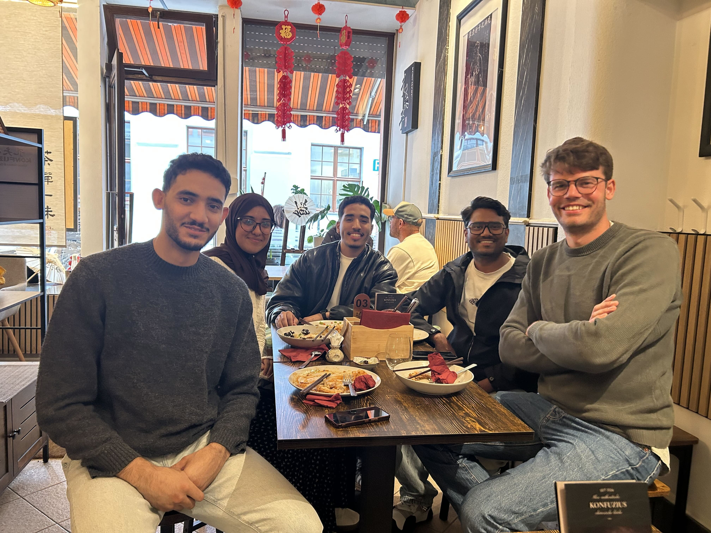
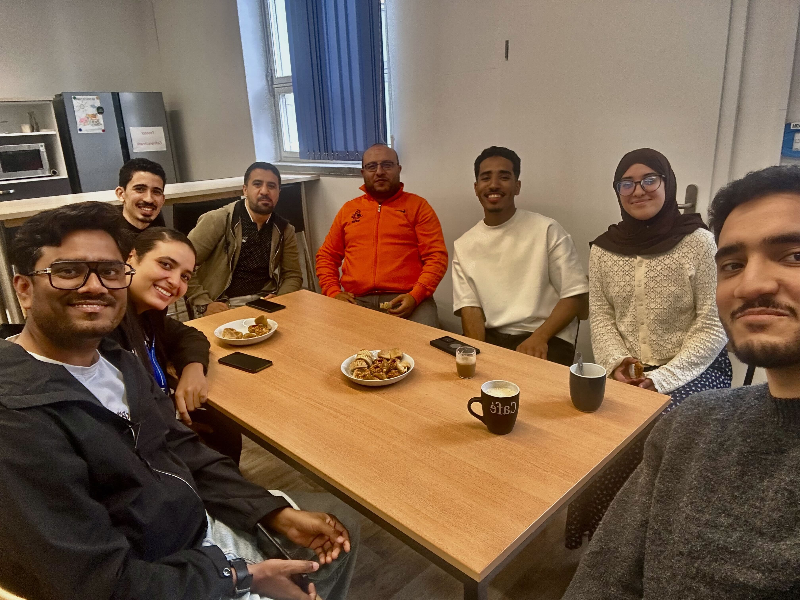
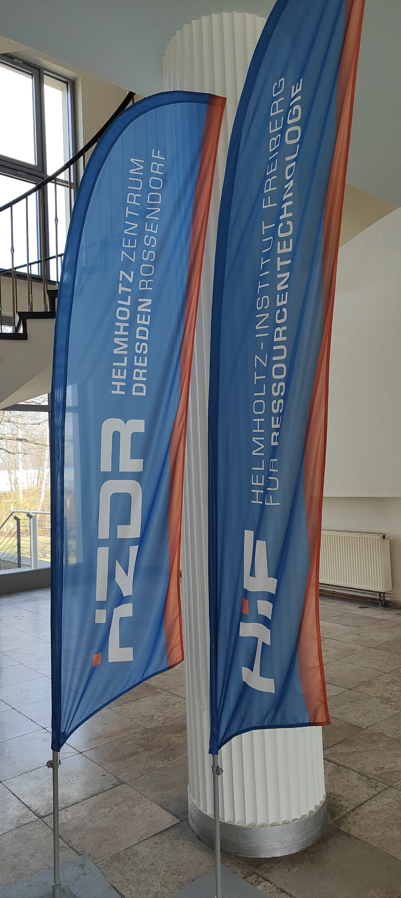
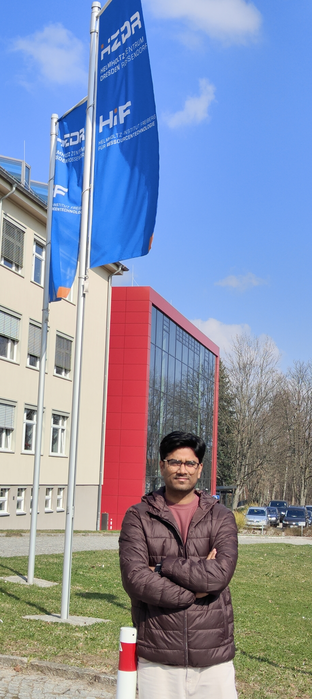
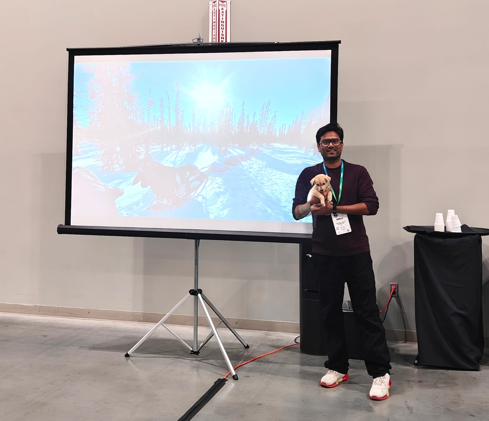
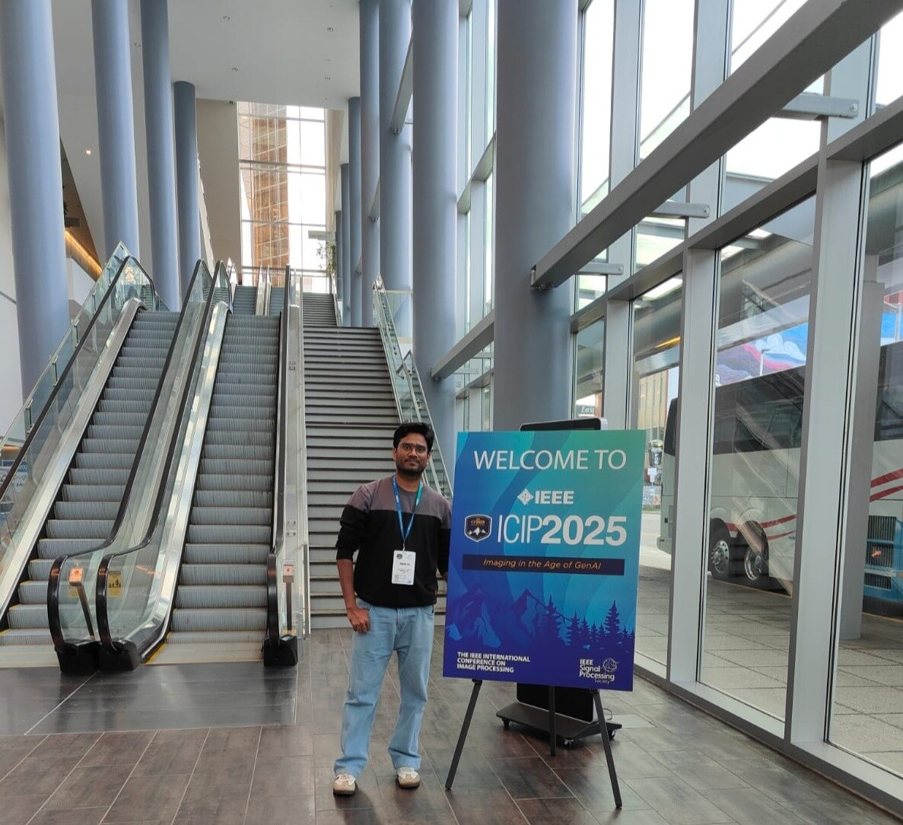
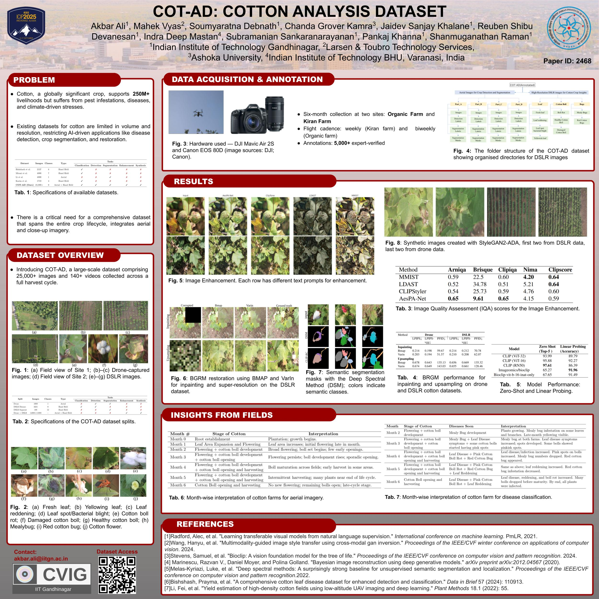
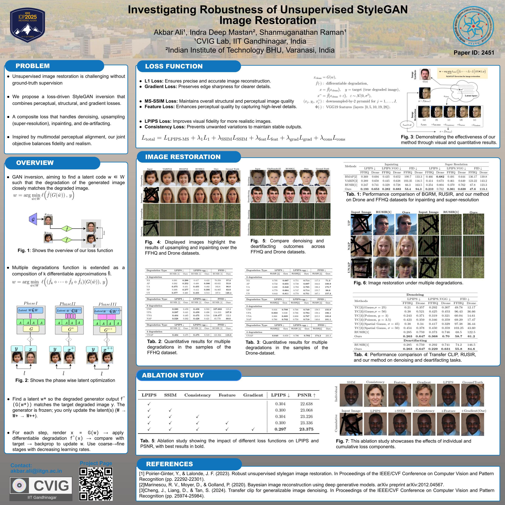

Akbar Ali
Some beautiful memories
Conferences, field days, summer schools and the people who made them good.
Helmholtz Institute Freiberg — HZDR
Six months in Germany on the Research Lab Abroad Fellowship.

Last day — farewell lunch with the friends and mentor

Coffee and cake in the kitchen on the last day.

First day. Walking into the building and seeing these in the lobby made the whole thing feel real.

Outside the institute on day one. A long way from Gandhinagar, and considerably colder.
ICIP 2025 — Anchorage, Alaska

My first international conference. Anchorage in September is something else — we finished sessions and still had daylight to wander.

Met people whose papers I had been reading for two years. That part never quite stops feeling strange.

Presenting COT-AD, the cotton dataset — the payoff for six months of weekly drone flights over a single field.

Presenting IRUSIR on the robustness of unsupervised StyleGAN restoration, the second of the two ICIP papers.
3D Vision Summer School — IIIT Bangalore, 2024

A week of lectures and hands-on sessions on deep learning for 3D vision. This is where Gaussian splatting stopped being a paper I had skimmed and started being something I wanted to build on.

Long days, good company. Half the value of a summer school is the conversations between sessions.
Visvesvaraya Workshop — IIT Mandi, 2024

Presenting to an interdisciplinary room in the Himalayas. Explaining your work to people outside your field is the fastest way to find out which parts you actually understand.

Mandi has a view you have to work not to get distracted by.
Learning to fly — SC 333, IIT Gandhinagar

I picked up drone flying after joining IITGN, and later came back to the same course as a teaching assistant — this time on the other side of it.

Teaching around thirty students to plan a mission, fly it, and bring back data worth processing.
Field campaigns

Out with the Earth Science group for drone and core acquisition. Three campaigns between 2023 and 2024.

Fieldwork teaches you things about your own data that no amount of processing will.
A season of cotton

Weekly flights at 10 m, 15 m and 115 m from July to December 2023, following one field through a full growth cycle. The dataset that came out of it became COT-AD.